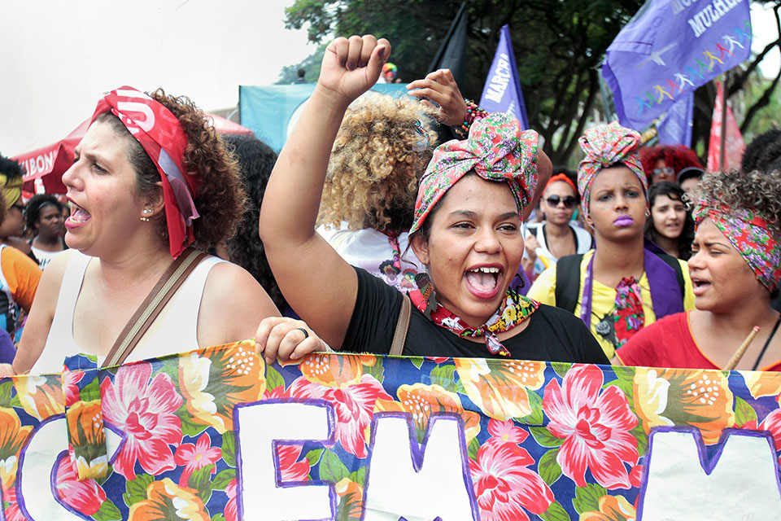
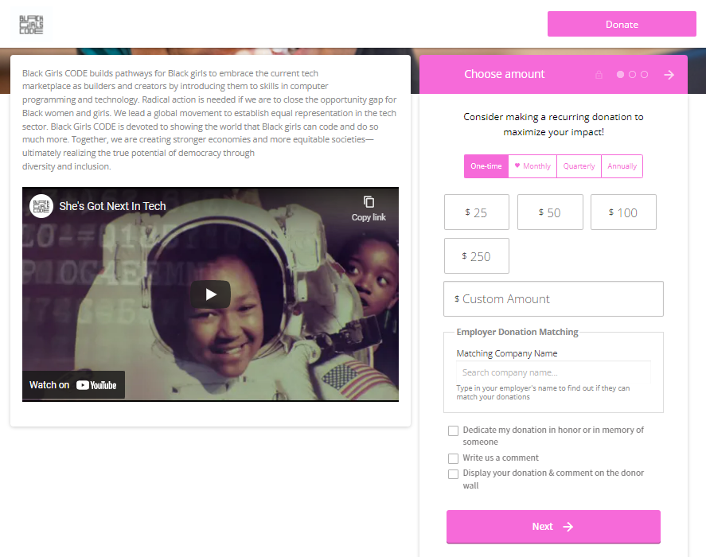
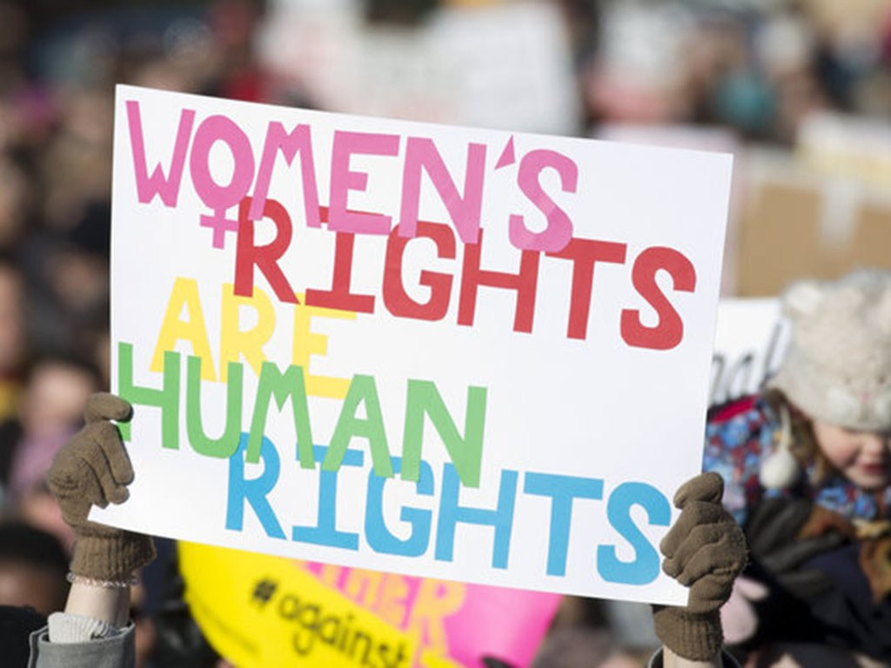

About Us

|
Hello! We are the founders of 'Aasha', meaning 'Hope' in Hindi! We created this NGO together to
fight
against all issues regarding the infringement of the most fundamental rights of women and girls.
Our
way
of fighting against these issues is by raising awareness of all the different factors that
accumulate in
doing so. We express our opinions, experiences, and thoughts on all topics being discussed, but
most
importantly, we make sure that data and news provided that doesn't belong to us, come from
reliable
sources and with full consent from private individuals.
That being said, let us introduce you to ourselves - all members of Aasha.
Mahima Pritmani: Mahima was the first to begin this organization. She was born on the 10th of June, 2008. She began this organization as an homage to the generations of women who have fought tirelessly and vociferously for their rights, for our rights - those we have today. She began it as an homage to those girls and women who still continue to be deprived of their fundamental rights. Facing forms of misogyny herself, she realized that millions of other women and girls are victims of more henous violences. Mahima advocates for human rights through her writing in Integrated Humanities, Language and Literature, and even French. She activlely participates in class discussions when a topic sparks her itnerest and even participates in MUN. She then came together with her other friends who share the same passion, compassion and urgency to fight against misogyny, discrimination and other violences. Huda Karroum: Huda was born on the 31st of October, 2008 and she's Lebanese. Huda's birthday is on halloween, which is qite interesting, if we must say. Huda has always cared deeply for the rights of women and girls and always putting her thoughts in her school work and advocating through social media to reach her relatively large audience. Huda is humerous and incredibly funny, making her an individual who easily grabs the attention of others so she can spread her messages and throughts. Bhavyaa Thakur: Bhavyaa Thakur was born on the 6th of October, 2008. She, like all other members, has a deep passion towards fighting for the rights of women and girls all over the world to bring peace and equity. Through forms like debate, MUN and writing, she gets her message out with incredible ease. Vyoma Patel: Vyoma was born on the 18th of January, 2008, being the eldest of the other 3 members of Aasha. Vyoma is very passionate about various discrimination against women and fighting against them to give all women and girls the life they deserve, the life that must never be deprived of the most basic, fundamental human rights. |
The Founders: Mahima, Huda, Bhavyaa, and Vyoma
Our Services
|  |  |  |
Advocacy |
Donations |
Values |
| At Aasha, we advocate for womens' and girls' rights by filling in our website with weekly news around the world regarding such issues, as well as by providing our personal experiences, views and opinions. We ensure that our advocacy remains unbiased and directed towards all women and girls. We deeply care about bringing up the most fundamental rights for women and girls because we have firsthand experienced many prejudices. | We also have a donation body through which we except funds from any voluntary members on social media platforms, or those who have found our website/seen our fliers. We also, through our fundraiser, give donations weekly. At the end of each month, all money raised is donated to different organizations like orphanages, hospitals, schools, etc, or are used to purchase items to give directly to such organizations. | We have three main values: Honesty, Candour, Impartiality. We need to be honest towards our audience and fellow adovcates so that we can own up to any mistakes and improve ourselves. Candour is to ensure that all information and news provided is truthful and evidenced. Lastly, impartiality refers to our service of equally advocating and supporting all women and girls regardless of age, race, beliefs, etc. |